Warlock
Ranged damage and summoner; ashblood.
Covenant scholars who bargain with the Deep. They bind lesser demons with Soul Shards, and a master can bind a Doomguard, briefly and at great cost. Feared, licensed and watched.
Spellbook
Role: Ranged DPS / Summoner (dark magic) · Resource: Mana + Soul Shards (dropped by slain enemies) · Races: The Risen, Bloodkin, Blight-Born, Half-Bloods
Summons undead servants, drains enemies' life with curses and uses dark flesh magic to deal damage over time.
In Orvessa: warlocks draw on ashblood, the rotten power of dead demons. As the Deep rises, their magic grows stronger, and the Black Synod recruits among them.
| Level | Spell | Effect |
|---|---|---|
| 1 | Shadow Bolt | Basic attack |
| 4 | Agony | Stacking DoT |
| 8 | Raise Thrall | Summons a skeleton |
| 10 | Drain Life | Channelled lifesteal |
| 14 | Curse of Weakness | Lowers the enemy's damage |
| 18 | Fear | Frightens a target |
| 22 | Summon Wraith | Pet with a silence |
| 26 | Soul Link | Shares damage with your pet |
| 30 | Corruption | Instant DoT |
| 36 | Bone Prison | Roots and damages |
| 42 | Siphon Soul | Steals life from several targets |
| 50 | Doomguard | Summons a large demon (costs a Shard) |
| 60 | Rite of Ruin | Ultimate: curses the entire enemy group |
Talent trees
- Affliction (DoT): Improved Agony, Nightfall Proc (free Shadow Bolt), Haunt, Soul Rot. Capstone: Plague of Ages, a DoT that spreads when the target dies.
- Necrosis (pets, summons): Pet Mastery, Dread Servants, Bone Armour, Grave Pact. Capstone: Legion of the Fallen, summons 5 skeletons at once.
- Bloodbound (sacrifice life for power, a tank path): Blood Pact, Dark Resilience, Pain Transference, Sanguine Barrier. Capstone: Crimson Pact, 10 s in which all damage you take becomes healing.
Gallery

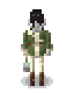

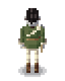

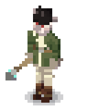

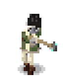

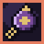

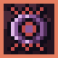

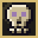

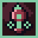

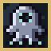

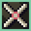

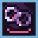

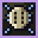